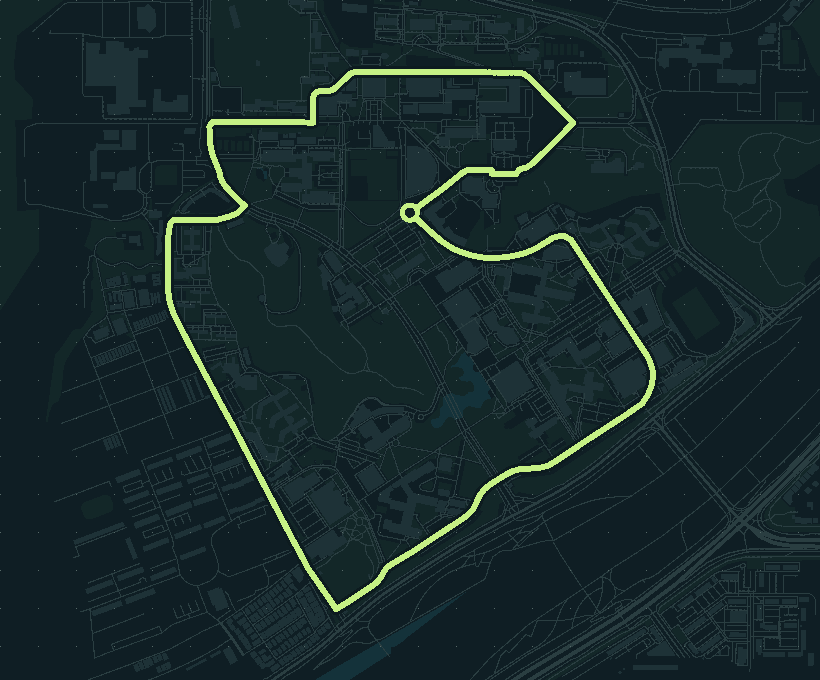

Turn your phone like a steering wheel to race through the KAIST campus.
Scan to open the game, then hold your phone in landscape.

Hold the phone sideways in your driving position.
Turn your phone to steer. Hold Drift with your left thumb and Gas or Brake with your right. Hold Brake at a standstill to reverse.
Time attacks post your best lap online. Practice laps stay off the leaderboard.
Loading online records…
© OpenStreetMap contributors. Elevation from GEDTM30, Ho et al. (CC BY 4.0), resampled and smoothed.
Campus reconstructed from approximately 30 m terrain data and reference photos. Building dimensions and small road features are estimates. Unofficial fan project adapting the KAIST Fun Run route to campus roads. Nubzuki is KAIST's mascot.